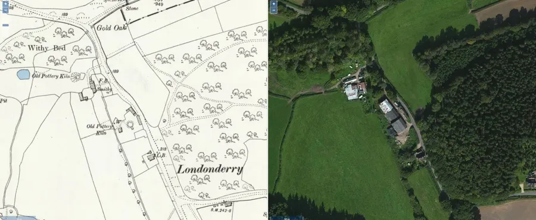
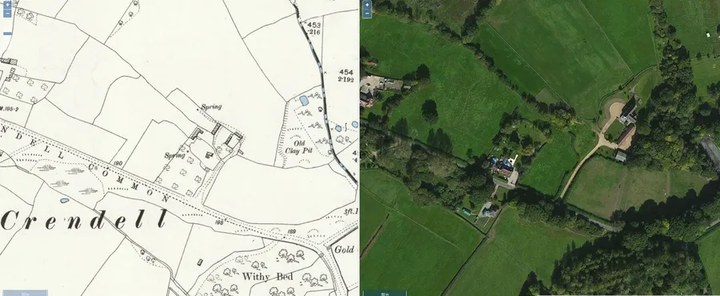
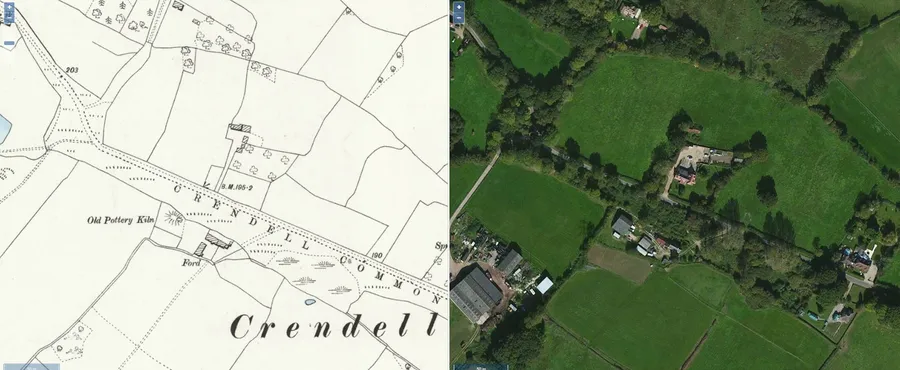
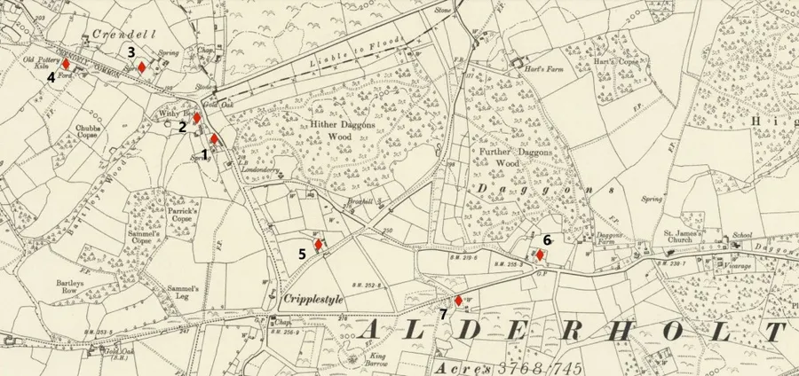
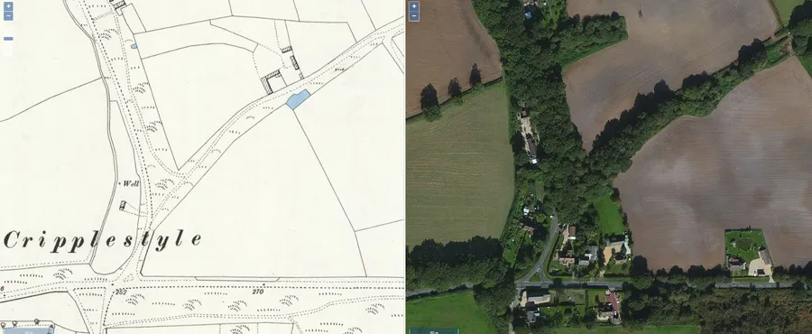
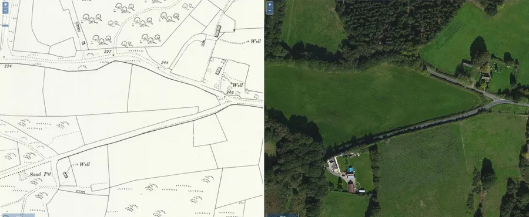
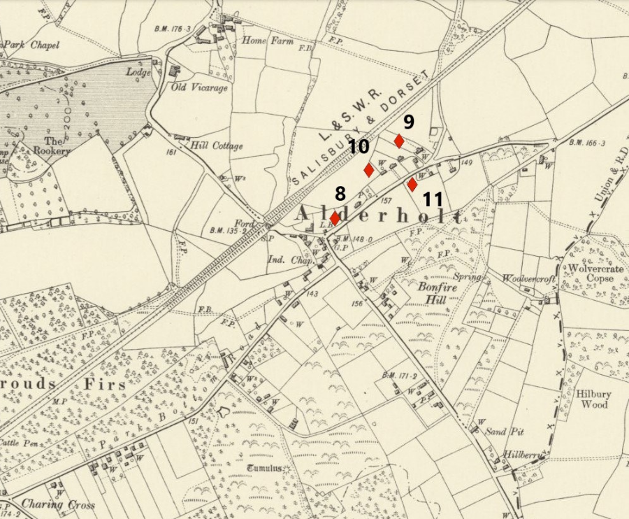
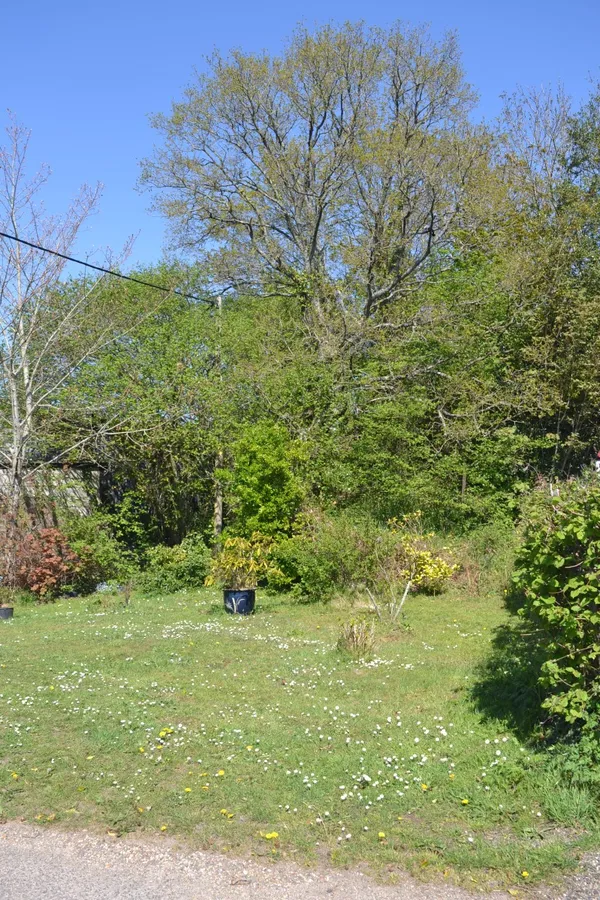
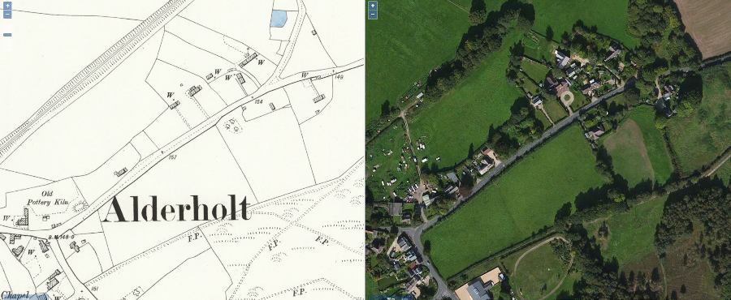

Potteries — Part II
by Adrian King

There are twelve known kiln sites that have been discovered in the parish.
Alderholt Crendell Cluster.
These sites were built close to the clay source. The OS National Grid references (SU etc) can be viewed using Grid Reference Finder or the Ordinance Survey website.
Site 1 (SU089129)
Near Gold Oak Farm. This was enclosed from the waste of Daggons in the 17th century and was in the possession of Lawrence Chubb before 1710. After his death six years later his widow Margaret continued as tenant with her sons Lawrence and Edmund running the kiln until 1754 when the holding was granted to Henry West.
This was the last pottery kiln operating in the Alderholt area.

Site 2 (SU088130)
Near the Gold Oak was the freehold known as Bucks. James Zebedee was potter and tenant in 1844 and remained there until the site closed in the late 1850’s.
Site 3 (SU087132)

In the plot opposite ‘Keswick’ in Crendell. The Salisbury Museum Archaeological Research Group did limited excavations in 1975. They found that the kiln mound still existed but the cottage and garden associated with it had disappeared long ago. Excavations discovered that the kiln itself belonged to the second half of the 18th century but the large quantities of waster sherds, which had been re-deposited within the insulating mound, were of an earlier date.
Site 4 (SU084132)

Site near Pond Farm. The Harvey family was probably potting here in the 18th century. By about 1800, William Fry and then Henry Fry had taken over, but the business was to finish before 1840.
Alderholt Daggons Cluster

Site 5 (SU093126)

Situated between Daggons and Crendell. James Foster (14 Dec 1790 to March 1871) enclosed the holding from the Common in September 1822 and built a workshop and cottage. He was the brother of Richard Foster (Forster) from Alderholt. From the Cranborne Manor Survey we know that he was potting from 1831–39. It was apparently not a financial success and in 1841 he was granted permission to demolish the kiln and workshop and build a barn and cart shed in their place.
Site 6 (SU100125)
Fernhill Farm. Situated on the Alderholt to Cranborne road just as the road bears right for Broxhill.
This site was in the possession of the Helliors family from sometime in the early 18th century.

Site 7 (SU097124)
Upper Daggons Farm. It is possible to see the workings of this site to the left and right of the Alderholt to Cranborne road.
Site 12 (SU102126)
This site was constructed in the grounds of Daggons Farm now Woodside Rest Home and little is known about it.
The Hellior family were possibly working it in the 18th century. The last one to be discovered.
Alderholt Presseys Corner Cluster
This is where it all began. The earliest known reference occurs in the Cranborne Manor accounts for 1337 when the tenants of the village paid 14 shillings for the privilege of digging clay to make pots. Although the number of kilns at this time is unknown there was clearly an established and thriving community operating here.
In 1392 there were 9 villagers paying for clay and in the early 1500’s there seem to have been seven kilns operating probably along this road between Pressey’s Corner and Red Lion Cottage.

Until the second quarter of the 15th century the deposits in Alderholt were able to supply the potters. But by 1500 as the vein of clay was worked out these potters were digging their clay from the common at Crendell and this was to remain their main source until 1742 when it was said that these deposits were exhausted.
The four kilns that are known straddle the Fordingbridge Road a little to the south of the original settlement and there were practical reasons for putting the early kilns here. This area was at the edge of the wild heathland marked Bruere Commune on the old maps. The kilns needed clay, sand and wood for pottery production and had a built-in fire risk. The homes of the potters were built possibly up by the Green a little way up Alderholt Street.
Site 8 (SU123131)
At Pressey’s corner in the grounds of Salisbury Arms Farm the kiln mound is tree-covered and gives the impression of a tumulus.

This was the longest occupied site in the area. There is a possibility that pottery was being produced here from before 1400 to the end of the 19th century.
The sherds that have been found are similar to that found in Potters Field at site 11 but are of a later date, about 1840.
Production ceased towards the end of the 19th century. No Potters are present on the 1891 Census.
The discovery of a large quantity of stoneware inkbottles in a nearby field adds to the speculation that in the later years of the kiln such bottles were being made there for Stephens Ink.
Peter Gould found a 15-inch diameter pipe still full of dry 17th century soot.
Site 9 (SU124133)
John Attwater constructed this site at the rear of the Red Lion Cottage in 1602. It is known that his son Thomas was potting there in the 1620s.
John Major had taken possession of this site along with Site 10 by 1700. Both were finally closed before the end of the century possibly in the second half.
A nearby pond was still called Potters Pond in the 1920s.

Site 10 (SU123132)
Pots were being fired here possibly as early as 1400.
John Major was tenant about 1700. Production ceased somewhere in the middle of the 18th century.
Site 11 (SU124132)
The Hennings family ran this site for much of the 18th Century the last of which was Charles. In 1809 John Viney was running the kiln. Later William Bailey and his son also William held the tenancy and continued potting until the 1860’s. The kiln was demolished during the 1950’s. Mr. Rose found a small jug just three inches high with a buff body, the brownish glaze of which was speckled freely with haematite ferruginous salts. The jug was dated to about 1700-1720.
In a field nearby, known as Potters Field a large quantity of sherds was found during excavation for a bungalow foundation. These were of a different type as they had not been so hard fired and the glazing varied from brown to green. The shapes were typical of that being produced from 1750-1800.